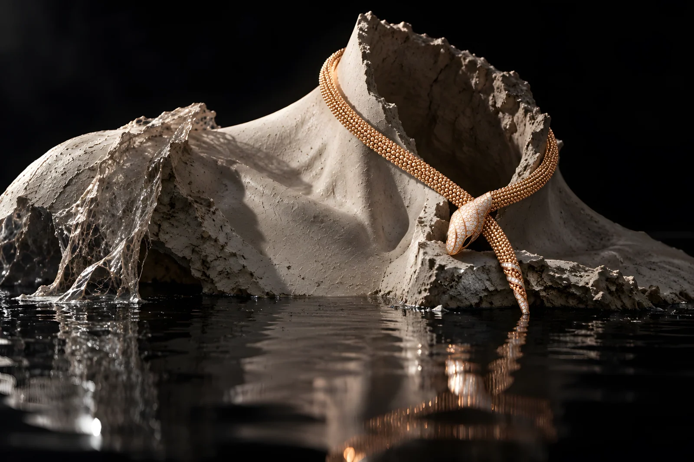

BVLGARI / SERPENTI
A serpent leaves its skin. The crafted form remains.

The idea
The necklace, a shed skin and a living serpent present three states of one form: permanence, absence and life. In the second image, an empty body cast lies broken at the waterline. The necklace remains around the place where a wearer should be.
Making the world
Rose-gold warmth is isolated against graphite, translucent scale, fractured plaster and still black water. Both images are AI-assisted interpretations of the Serpenti necklace, not approved product photography; its exact stones and construction need product-team verification. The second 4K-class master was enhanced from a smaller generated image.
The series
